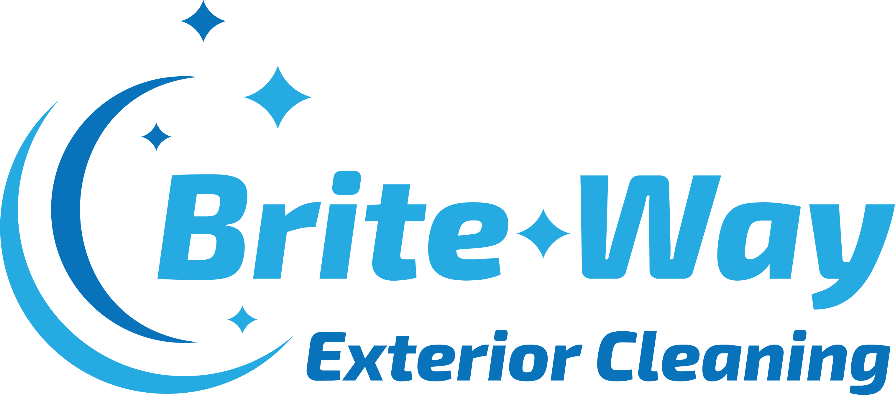
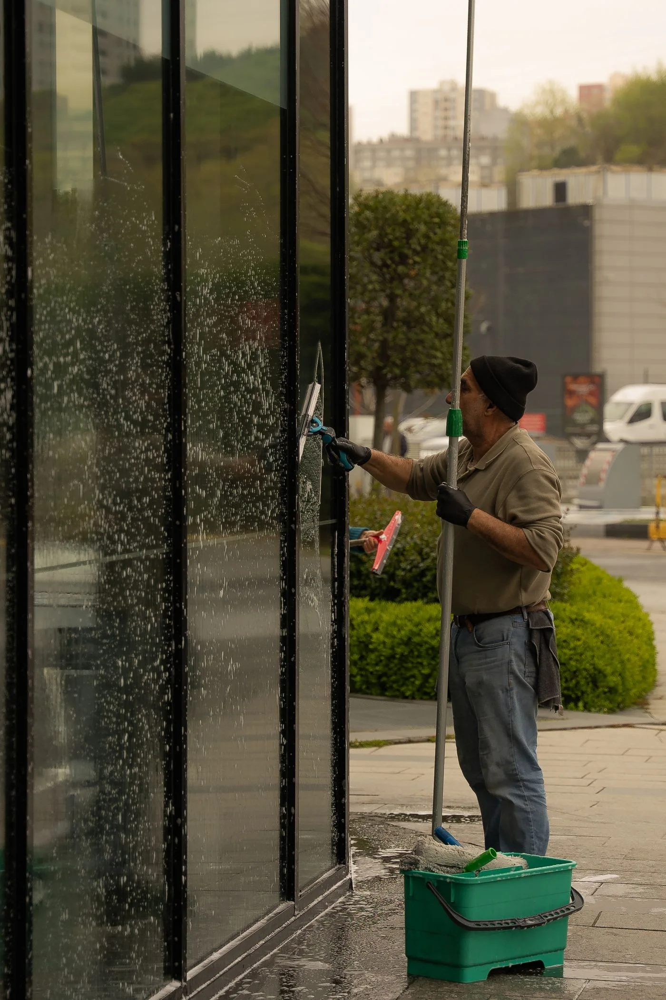

Window cleaning
For residential and commercial glass. Share the property type and areas to be cleaned.
Ask about window cleaning
Window, gutter and exterior cleaning for Dallas-Fort Worth homes and businesses.

Choose the service for your property.
Confirm coverage for your address.
Arrange the next step with the team.
A focused service menu. One place to start your estimate.
For residential and commercial glass. Share the property type and areas to be cleaned.
Ask about window cleaningAsk about suitable exterior surfaces and the right scope for your property.
Ask about power washingTell the team about your building and the gutters that need attention.
Ask about gutter cleaningDescribe the hard-to-reach areas you need assessed for cleaning.
Ask about high dustingServing the Dallas-Fort Worth area. Start with the property address, your service choice and a description of the job.
Yes-describe the other services in your enquiry so the team can assess the full job.
Request an estimate for your property. This concept intentionally avoids reproducing service prices that need owner confirmation.
No. The form demonstrates an estimate request and sends nothing. Contact Brite-Way directly using the published details below.
Choose your service and share a few details. This sample shows the enquiry flow; it does not send a request.
These links use the business's publicly listed contacts. Opening one leaves this demo.